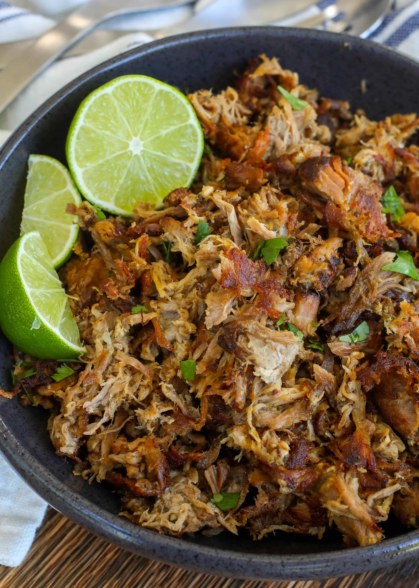

Carnitas

Gotta love when a meal makes your whole house smell as good as thise recipes does, you know you have made the right choice.
Ingredients
- 1x 5lb bone in pork butt
- 1x Large navel orange
- 8x average size cloves of garlic
- olive oil
- orgegeno
- Cummen
- Salt
- x4 Bay leaves
Steps
- Rub pork with a think coat of olive oil
- Place pork in cooker with FAT CAP UP.
- Libiraly apply seasonings
- smash garlic cloves and place on on and around the butt
- peal and plave the orange on and around the booty
- place Bay leaves around the rump
- Cook on low for 8 hours
- shread in the cooker
- remove pork and distribut on a cooking sheet (leave the juice in the cooker, we will use it again)
- Broil until the edges are nice and crispy
- Move pork into large serving container, and re-moisten the pork by pouring the juice from the cooker over it